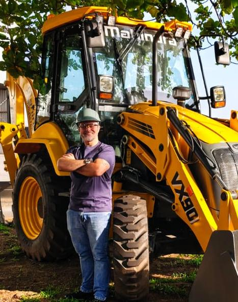
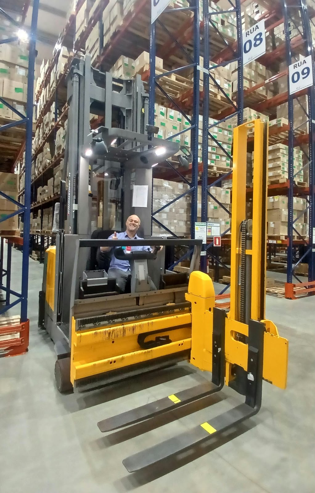
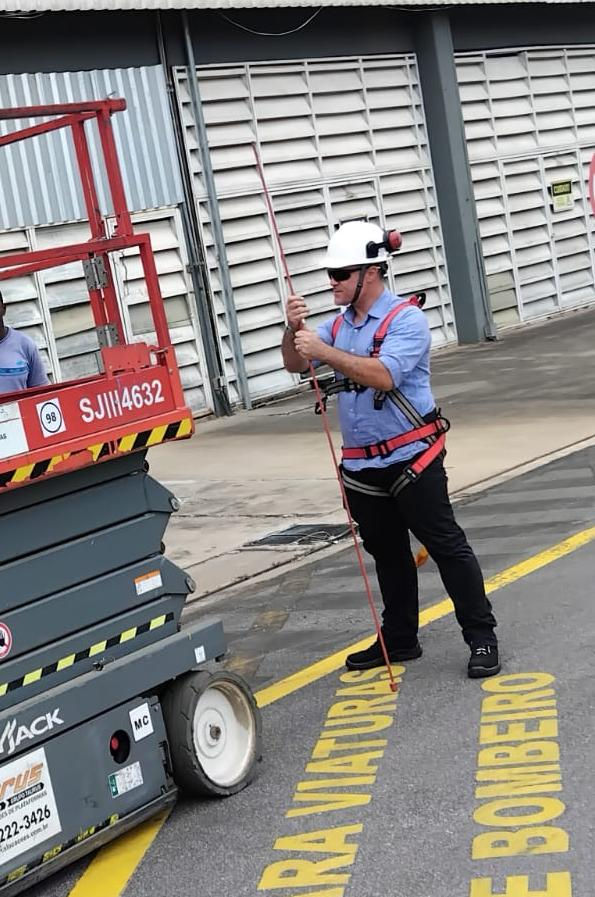
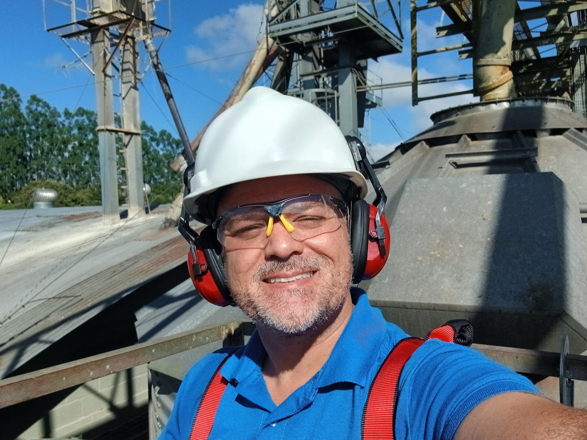
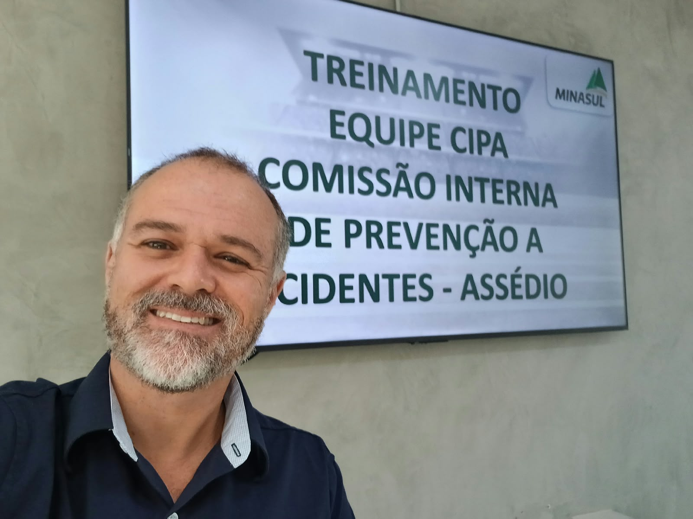
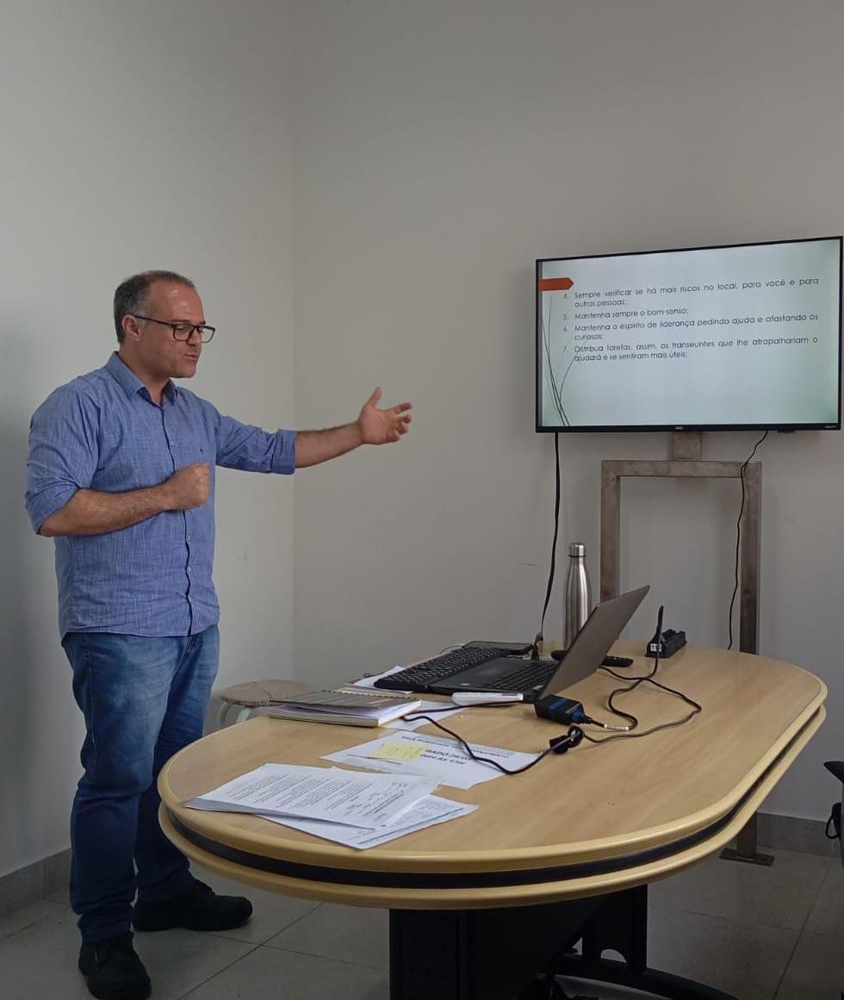

ALESSANDRO RODRIGUES · SUL DE MINAS
Segurança no trabalho.
Conhecimento para a vida.
Consultoria e treinamentos para empresas e pessoas.
Mais de 15 anos de experiência técnica a serviço do seu aprendizado.
Conhecimento construído no trabalho.
Preparação para o seu próximo passo.
Perto de você e da sua empresa.
QUEM SOMOS
Experiência que se transforma
em conhecimento.
Sou Alessandro Rodrigues, técnico há mais de 15 anos. Compartilho minha experiência em palestras e treinamentos nas áreas de segurança no trabalho, operação de equipamentos e atendimento a emergências.
Um trabalho voltado a empresas e ao público em geral, com atenção ao cuidado com as pessoas, à prevenção e à realidade de cada atividade.
Converse comigo ↗COMO PODEMOS AJUDAR
Preparação para diferentes desafios.
Segurança e prevenção
Saúde mental, CIPA, EPIs, proteção auditiva e segurança em máquinas.
Vamos conversarOperação de equipamentos
Empilhadeiras, caminhão munck, ponte rolante, paleteira e máquinas pesadas.
Vamos conversarEmergências e resgate
Primeiros socorros, brigada, PAE, espaço confinado, altura e emergências ambientais.
Vamos conversar
Experiência em campoPOR QUE APRENDER COM A GENTE?
A experiência faz
a diferença.
- ✓
Mais de 15 anos de experiência técnica
Uma trajetória que aproxima o conhecimento da realidade do trabalho.
- ✓
Para pessoas e empresas
Opções de treinamento para sua equipe ou para seu desenvolvimento.
- ✓
Cuidado com quem faz acontecer
Segurança, prevenção e responsabilidade em cada aprendizado.
NOSSO TRABALHO EM IMAGENS
Conhecimento que vai além da sala.
Registros de treinamentos e atividades em campo. Toque nas fotos para ampliar.





NOSSA REGIÃO
Perto de você. Perto da sua empresa.
Atendimento no Sul de Minas. Consulte a disponibilidade na sua cidade.
FALE CONOSCO
Vamos planejar
seu próximo
treinamento?
Conte o que você precisa. Converse diretamente com Alessandro para consultar turmas ou solicitar um orçamento para sua empresa.
(35) 99726-0815Atendimento em Varginha, Lavras, Perdões,Pouso Alegre, São Gonçalo do Sapucaí e região.